Warlords III: Era de Alianzas — Manual de uso. Borrador de trabajo, edición del 27/10/2026.
Documento interno del clan. No está pensado para su distribución: describe el estado del parche a la fecha de la edición, incluidas funciones que todavía están en período de prueba. Las secciones marcadas como en prueba o en desarrollo pueden cambiar en las próximas versiones.
Warlords III: Darklords Rising es una obra de Strategic Studies Group (1997). Este parche no reemplaza el juego original: lo complementa con un ejecutable propio. Todas las marcas pertenecen a sus dueños.
Convenciones: los nombres que aparecen en pantalla en inglés se escriben tal cual (Allied View,
Build Trap); las teclas, como Q; las rutas de archivos, como DATA\IA.INI (siempre dentro de la carpeta del juego).
Durante años, las alianzas de Warlords III fueron un acuerdo de palabra: dos bandos que no se atacaban y nada más. Era de Alianzas convierte la alianza en una forma de jugar: se comparte lo que se ve, se comparten ciudades, se derriban puentes para cortar al enemigo y el mapa esconde peligros que el equipo tiene que descubrir junto.
Era de Alianzas (internamente, el parche vista-aliada) es una modificación de Warlords III:
Darklords Rising desarrollada para las partidas del clan. Se instala con el Actualizador (capítulo II) y se
juega abriendo DarklordAV.exe, un ejecutable nuevo que vive junto al original. El título del juego pasa a
ser «Warlords III Era de Alianzas», con su propio logotipo en el menú principal.
Darklord.exe y DATA\War3.RES solo se leen; el
parche crea archivos nuevos (DarklordAV.exe, DATA\WAR3AV.RES y los del Apéndice B).
Quien quiera jugar sin el parche abre el ejecutable de siempre.DarklordAV.exe de la misma versión del parche.| Novedad | En pocas palabras | Cap. |
|---|---|---|
| Vista aliada compartida | Los aliados mutuos ven el mapa que explora cada uno, también con niebla. | IV |
| Ciudades compartidas | Las tropas aliadas entran y se refugian en las ciudades del socio; banderas de los socios en las torres. | IV |
| Landing, Carrier, Cabotage | Barcos que desembarcan en cualquier costa, convoyes de hasta 24 unidades y barcos costeros que cruzan ríos. | V |
| Raft | Balsas precarias: zarpan y desembarcan en cualquier costa, con hasta 3 unidades, pegadas a tierra y hasta 2 vueltas en el agua. | V |
| Puentes | Derribarlos, reconstruirlos, pelear sobre ellos con el bono Bridge y misiones de héroe para volarlos. | VI |
| Pozos, remolinos y trampas | Peligros ocultos que matan a quien los pisa; trampas y minas submarinas que construye el jugador. | VII |
| Día y noche | Una vuelta de día y otra de noche: oscuridad con halos de luz, tropas camufladas y monstruos más fuertes de noche. | VIII |
| Marcador en el mapa | F12: los cuatro primeros en Winning, Armies, Cities o Gold, en vivo sobre el mapa. | III |
| Reglas del clan en el Army List | El juego marca las unidades que el DarklordsValidator rechazaría. | IX |
| Pilas con voladores | Una pila con algún volador admite como máximo 6 ejércitos. | IX |
| Montañas altas | Ya no se cruzan ni volando: los voladores las rodean, salvo por un camino de montaña. | IX |
| Órdenes por chat | Escribir .n ataca CIUDAD a un aliado manejado por la computadora. | X |
| Votación, Sorteo, Comparador | Botones dentro del juego que abren las herramientas del clan en todas las PC. | III, XI |
| Ítems en mapas al azar | Los ítems personalizados entran en el sorteo de las ruinas. | XII |
| Torres, faros y murallas | Obras que ven lejos y defienden: +1 de fuerza, bonos del muro y Life Ward contra el Life Drain. | XVII |
| IA mejorada | La computadora usa barcos, puentes, refugios aliados y esquiva los pozos que ve. | XIII |
Un solo programa mantiene al día la carpeta del juego: baja ejércitos, hechizos, héroes, escenarios, ítems, el juego completo, los parches y las herramientas del clan.
C:\Warlords3 salvo que la PC tenga otra anotada; el Actualizador la muestra arriba del menú («juego en …») (la versión de GOG corre en ventana, lo que permite
que las herramientas del clan se abran encima del juego).Actualizador-v.<versión>.exe, publicado en la sección de lanzamientos del repositorio
Warlords-updater (lanzamiento «Ejecutable»).El Actualizador tiene aspecto de terminal. Muestra un menú numerado; se escribe el número de la opción y
Enter. Se pueden pedir varias a la vez separándolas con espacios (por ejemplo 1 2 3), salvo la 6,
que va sola.
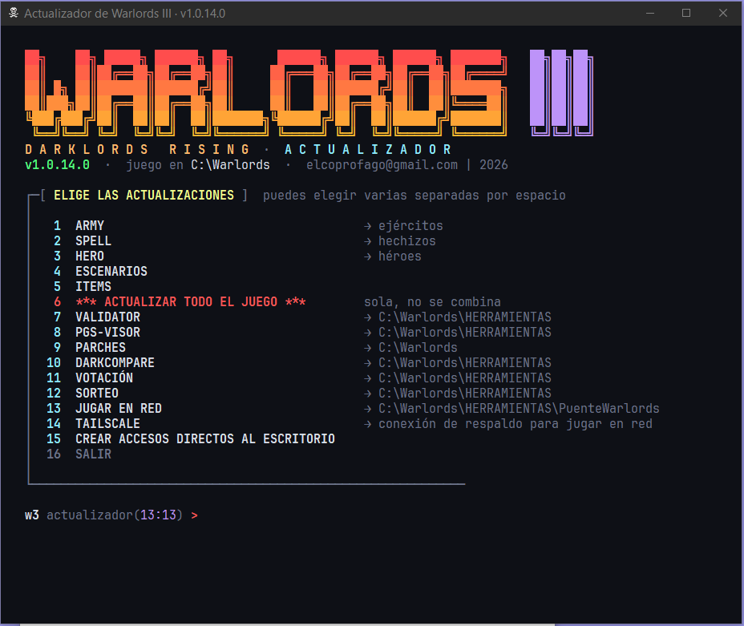
| N.º | Opción | Qué hace |
|---|---|---|
| 1 | ARMY | Baja los ejércitos (ARMY). |
| 2 | SPELL | Baja los hechizos. |
| 3 | HERO | Baja los héroes. |
| 4 | ESCENARIOS | Baja los escenarios. |
| 5 | ITEMS | Baja los ítems. |
| 6 | ACTUALIZAR TODO EL JUEGO | Instala el juego completo sobre la carpeta del juego. No pisa lo propio de cada PC (configuración, partidas, herramientas). Va sola. |
| 7 | VALIDATOR | DarklordsValidator, el validador de unidades del clan. |
| 8 | PGS-VISOR | EditorPGS, visor de bandos (.PGS). |
| 9 | PARCHES | Lista los parches disponibles (Era de Alianzas y el paquete de herramientas) e instala el elegido. El paquete de herramientas instala la carpeta HERRAMIENTAS del juego si no está, o la actualiza si ya está. |
| 10 | DARKCOMPARE | Comparador de armas. |
| 11 | VOTACIÓN | Programa de votación de la partida. |
| 12 | SORTEO | Sorteo del orden de elección de posiciones. |
| 13 | JUGAR EN RED | Instala o actualiza Puente Warlords y lo abre. |
| 14 | TAILSCALE | Conexión de respaldo para jugar en red. |
| 15 | CREAR ACCESOS DIRECTOS | Pone en el escritorio los accesos a las herramientas instaladas. |
| 16 | DIAGNÓSTICO DE VIDEO | Junta los datos de video de la PC (placa, driver, resolución, escala, configuración del juego) en un archivo del Escritorio, para mandarlo si el mapa se ve mal. |
| 17 | RENDER DE VIDEO | Para PC con placa de video vieja o integrada, donde las casillas ocultas del mapa se llenan de tropas. Cambia el programa de video del juego por cnc-ddraw, que dibuja con Windows y no con la placa, en pantalla completa. Se deshace con «Volver al original». Si el mapa se ve bien, no hace falta. |
| 18 | SALIR |
Antes de instalar un parche, el Actualizador verifica el paquete bajado. Cada parche lleva su número de versión;
la PC recuerda cuál tiene instalada en la carpeta PARCHES del juego.
Las opciones 7, 8, 10, 11 y 12 dejan cada programa en la carpeta HERRAMIENTAS del juego. Al actualizar no
se pisan los archivos .ini que ya estén: la configuración de cada PC se conserva. Votación y Sorteo son
los programas que abren los botones del juego (capítulos III y XI).
Opción 13. Deja Puente Warlords en HERRAMIENTAS\PuenteWarlords y lo abre. Si ya está instalado,
solo baja una versión nueva cuando la hay.
Opción 14. Es la conexión de respaldo del Puente. Si falta, instala Tailscale y abre en el navegador el inicio de sesión; después pide el enlace con el que el dueño del servidor comparte su PC y espera a que el servidor responda. Requiere haber instalado antes el Puente (opción 13).
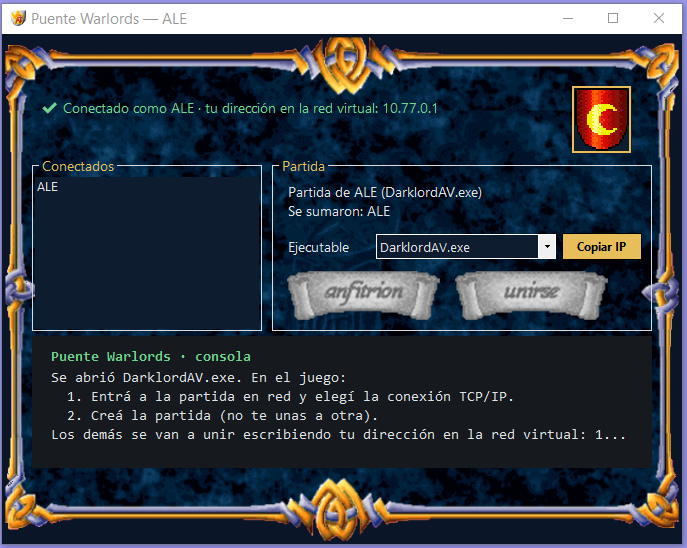
Abrir DarklordAV.exe, en la carpeta del juego (o su acceso directo del Escritorio). El menú principal muestra el logotipo de Era de Alianzas y, debajo de las opciones, el enlace a la web del clan (sites.google.com/view/plagacarriers; un clic copia la dirección para pegarla en el navegador, como lo avisa su ayuda emergente, y además la abre en el navegador, que queda detrás del juego); el resto
de los menús es el del juego original.
Grupos de ejércitos. SHIFT + 1 a 9 guarda la selección en uno de nueve grupos y 1 a 9 la vuelve a
seleccionar. El juego original solo lo hacía bien con teclado de Estados Unidos; el parche lo arregla para cualquier
teclado. Las demás teclas rápidas se cambian en keys.w3: la primera palabra de cada renglón es la tecla;
no hay que cambiar el orden de los renglones ni las cinco líneas del encabezado. Los grupos (1-9) no se pueden cambiar.
Marcador en el mapa. F12 muestra arriba a la derecha del mapa, sin recuadro, los cuatro bandos que van primeros en un informe, de mayor a menor, cada uno en su color y con una barra (del alto de las minúsculas) que se compara con la del primero; el título del informe va en negrita. Cada F12 pasa al informe siguiente: Winning (el mismo puntaje del Winners Report), Armies (ejércitos vivos), Cities (ciudades), Gold (oro) y apagado. SHIFT + F12 pasa por cuatro vistas: nombres con barras, nombres con números, escudos con barras y escudos con números (el cuarto toque vuelve a la primera). El bando que tiene hechizos en juego lleva al principio de su renglón una pequeña estrella rosa de cuatro puntas, la misma que se enciende en la botonera junto al número de maná. El título va centrado sobre los renglones, y el conjunto se mantiene pegado al margen derecho en todas las vistas. Se actualiza solo mientras se juega; los bandos eliminados no aparecen. Funciona también en partidas guardadas. La Ayuda (F1) lo muestra debajo de F3, que sigue siendo Chat Mode.
En qué monitor arranca. Con más de una pantalla, el juego arranca en la principal. Para que arranque en
otra, crear en la carpeta DATA del juego un archivo de texto PANTALLA.INI con estos dos
renglones:
[Pantalla] Monitor=2
El número es el que Windows le da a cada pantalla (Configuración → Sistema → Pantalla → «Identificar»). La
ventana de inicio («Un jugador», «Red»…) se abre centrada en esa pantalla, y el juego la ocupa entera. Limitación
conocida: en una pantalla que no es la principal, el puntero del mouse puede verse corrido respecto de donde
apunta, y aparecer además el de Windows sobre la pantalla principal. Si el número no existe, o con Monitor=0, o sin el archivo, el juego
arranca en la principal como siempre.
En Customize Options aparecen tres casillas nuevas:
| Casilla | Efecto | Requiere |
|---|---|---|
| Allied View | Vista aliada compartida: los aliados mutuos comparten lo explorado (capítulo IV). | Diplomacy activada. Tiene efecto con Hidden Map. |
| Shared Cities | Ciudades compartidas entre aliados (capítulo IV). | Diplomacy activada. |
| Day/Night | Una vuelta de día y otra de noche (capítulo VIII). | Nada. Se puede combinar con Hidden Map. |
Las tres aparecen también en el informe View Game Options («Shared Allied View», «Shared Cities» y «Day/Night») para que todos los jugadores sepan con qué reglas se juega. Viajan con la partida guardada y por red.
Los pozos y remolinos (capítulo VII) aparecen solo si la partida tiene activada la opción del juego Hidden Ruins.
Aviso del fin del turno. Si la partida tiene límite de tiempo por turno, en los últimos 5 segundos suena la misma cuenta regresiva que en los informes y el cursor muestra los números 5, 4, 3, 2 y 1, también mientras se juega en el mapa. Solo la oye el jugador de turno, en su PC; en pausa no corre.
En la pantalla de preparación, junto al botón Chat, hay un botón con el ícono del Sorteo. Lo usa el anfitrión: al pulsarlo, el programa Sorteo se abre en todas las PC de la partida. Sortea el orden en que cada color elige su posición (una ciudad con mapa visible, un cuadrante con mapa oculto). El anfitrión lo opera; los demás lo ven como espectadores, con sus bandos marcados. Requiere que cada PC tenga instalado el paquete de herramientas (Actualizador, opción 9 o 12); si falta, el juego lo avisa.
En Edit Side, arriba a la izquierda junto a Armies, un botón con el ícono de DarkCompare abre el comparador de armas sobre los ejércitos de la carpeta del juego. Es local: cada jugador lo abre en su PC, en cualquier momento, y no afecta a los demás. Si ya está abierto, trae su ventana al frente.
Un aliado es otro par de ojos y otra muralla. Todo lo de este capítulo vale solo entre aliados mutuos: los dos bandos tienen que haberse declarado aliados en la diplomacia del juego.
Con Allied View y Hidden Map, cada casilla que explora un bando la ven también sus aliados mutuos. Si la alianza se rompe, cada uno conserva solo lo que exploró por sí mismo: lo que le prestó el ex aliado vuelve a quedar oculto.
Con Fog of War activada, la niebla se despeja alrededor de las ciudades y los ejércitos propios y de los aliados mutuos. Los ejércitos invisibles siguen viéndose solo por su dueño, aliado o no.
Con Shared Cities, una ciudad pasa a ser compartida con los aliados mutuos de su dueño. En mapa oculto, solo la comparten los aliados que la exploraron con sus propios ejércitos; con el mapa visible, todos.
Cuando solo quedan con vida bandos aliados entre sí, el juego muestra el cartel «An allied victory!».
En el juego original, todo desembarco pasa por un puerto. Era de Alianzas agrega tres bonos de movimiento para el barco de cada bando, que cambian por completo la guerra naval.
Cada bando tiene un único tipo de barco (la última ranura de su lista de ejércitos). Los bonos se le ponen al barco en el editor de ejércitos, en cualquiera de sus cuatro casilleros de Move Bonus, y desde ese momento rigen para todo el bando. El Army List los muestra entre las habilidades de la unidad.
Una balsa de troncos atados: el barco de un bando con el bono Raft no necesita puerto.
.ARM (bajos: es una balsa precaria). Si el barco
tiene además Landing, Carrier o Cabotage, manda Raft: tope de 3, 1 casilla de la costa y sin convoyes.En el original, un puerto arrasado seguía sirviendo para embarcar. Ahora no: hay que reconstruirlo para volver a usarlo.
| Bonos del barco | Ejércitos por barco | Movimiento máximo | Desembarca |
|---|---|---|---|
| Ninguno (original) | Tope del bando | El del barco | Solo en puertos |
| Landing | 5 | 12 | Cualquier costa |
| Landing + Carrier | 6 (convoy de hasta 3 barcos) | 20 | Costa; en convoy, solo puertos |
| Carrier | Tope del bando (convoy de hasta 3) | 24 | Solo en puertos |
| Cabotage | Tope del bando | El del barco | Solo en puertos; no se aleja de la costa |
| Raft (con o sin los demás) | 3 | El del barco | Cualquier costa; zarpa de cualquier costa; 1 casilla de tierra; se hunde si pasa 2 vueltas en el agua |
Un puente es un paso obligado. Ahora también es un objetivo.
Al pie de un puente derribado, la orden Build lo reconstruye al costo de fundar una ciudad (con el descuento del jugador, como los sitios). El puente tiene que estar vacío.
Una unidad con la habilidad especial Bridge +N suma N a su fuerza cuando la batalla es sobre un puente en pie, ataque o defienda. No vale en puentes derribados ni para héroes. Se asigna en el editor como cualquier habilidad.
Al pedir misión (Get Quest, tecla Q) en dificultad Average, entre los objetivos posibles aparece derribar un puente enemigo o sin dueño, a la misma distancia que los sitios. Se cumple al derribarlo con el héroe y se premia como «Destroying an Enemy Site». Fracasa si otro lo derriba antes. La IA también recibe y cumple estas misiones.
«Your army fell into the Well of Souls!» — Bajo el mapa hay abismos que nadie dibujó. Quien no explora con cuidado los encuentra de la peor manera.
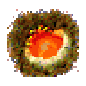
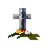
Con la opción Hidden Ruins, el mapa reparte al empezar, en secreto:
La cantidad de cada uno es el 20 % de las ruinas del mapa (mínimo uno). Cada uno tiene nombre propio (por ejemplo Well of Souls o Maelstrom of Kor). Al empezar, cada jugador ya conoce los que hay en la región de su capital.
Con Discover Ruins, un grupo descubre un pozo o remolino al pasar a una casilla de él. Una vez descubierto, queda dibujado para ese jugador el resto de la partida. Pasando el mouse por encima aparece la lupa; con el botón derecho se abre un cuadro con el nombre y el tipo (de día: ver capítulo VIII).
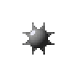
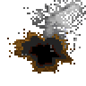
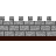
Las unidades con el bono de combate Trap (se asigna en el editor, por ejemplo a los zappers) pueden sembrar trampas:
en prueba En dificultad Hard, si el héroe conoce una trampa enemiga cercana, puede salir la misión «Escort trap-disarming team to Afland02». Se cumple haciéndola explotar con un ejército propio y llevando al héroe, por tierra y sin volar, a una casilla o menos de ella. Fracasa si la trampa se gasta sin que la haya detonado el jugador. Solo la reciben jugadores humanos.
Una vuelta de día y otra de noche: de noche se ve menos, algunas tropas se esconden y los monstruos se vuelven más fuertes.
En Customize Options, columna Viewing Options, marcar Day/Night. Se puede combinar con Hidden Map. El informe View Game Options muestra «Day/Night» para que todos sepan con qué reglas se juega. Las vueltas impares son de día y las pares de noche.
De noche, un grupo cuyas unidades tienen todas el Move Bonus camouflg se dibuja como una figura tenue en gris verdoso, del tono del pasto, que se confunde con el terreno (globito del color del equipo incluido). En el Army Report de noche, esos grupos no les aparecen a los demás; sí a su dueño y a los aliados con vista aliada. Las unidades armadas antes de la versión 1.0.88.0, que traen el bono con su nombre viejo camo, también se camuflan.
De noche, toda unidad cuyo tipo tenga la clase monster, demon o undead (en Edit Army Data, sus Army Subtypes) gana +2 en una sola cosa, sorteada: fuerza, hits, su bono de combate (si tiene uno) o su habilidad especial (si ya tiene una; por ejemplo, trample 1 pasa a trample 3). Hay un sorteo por noche, que vale en todos los combates de esa noche. No hay que asignar nada en el editor. Los héroes no lo reciben.
Una pila que incluya al menos un volador (unidad voladora o héroe que vuela, por sí o por un objeto) admite como máximo 6 ejércitos. Las pilas de más de 6 de partidas viejas no se parten: solo no pueden crecer.
Las montañas altas (el terreno «Mountains» del mapa) ya no se cruzan ni volando: los voladores, igual que las tropas a pie, tienen que rodearlas. Se pasa solo por un camino de montaña, como siempre.
| Bono | Dónde se pone | Efecto |
|---|---|---|
| Landing | Move Bonus del barco | Desembarco libre (cap. V) |
| Carrier | Move Bonus del barco | Convoyes (cap. V) |
| Cabotage | Move Bonus del barco | Navegación costera (cap. V) |
| Raft | Move Bonus del barco | Balsa: zarpa de cualquier costa (cap. V) |
| Trap | Combat Bonus | Construir trampas (cap. VII) |
| Camouflg | Move Bonus | Camuflaje de noche (cap. VIII) |
| Bridge +N | Habilidad especial | +N de fuerza sobre puentes en pie (cap. VI) |
El Army List del juego marca las unidades que DarklordsValidator rechazaría según el manifiesto del clan. La coincidencia con el validador se comprobó sobre los 374 ejércitos de la carpeta del juego, con cero diferencias.
Definiciones: volador, la unidad con «fly» en algún casillero de Move Bonus; barco (ship), la unidad de agua; terrestre, la que no es ninguna de las dos.
| N.º | Regla |
|---|---|
| 1 | Ningún terrestre puede tener movimiento mayor a 25. |
| 2 | Ningún terrestre con Power «trample» puede tener movimiento mayor a 15. |
| 3 | Ningún terrestre con Power «Siege» mayor a 2 puede tener movimiento mayor a 17. |
| 4 | Ningún volador puede tener movimiento mayor a 40. |
| 5 | Ningún volador con Power «trample» puede tener movimiento mayor a 20. |
| 6 | Ningún volador con Power «Siege» mayor a 2 puede tener movimiento mayor a 22. |
| 7 | Ningún barco puede tener movimiento mayor a 30. |
| 8 | Ningún barco con Move Bonus «landing» puede tener movimiento mayor a 12. |
| 9–11 | Voladores: con Strength > 3 o Hits > 1, costo mínimo 600, upkeep 10, 3 turnos; con Strength > 6 o Hits > 2, 800, 15, 4 turnos; con Strength > 8 o Hits > 3, 1000, 20, 5 turnos. |
| 12–14 | Terrestres: con Strength > 3 o Hits > 1, costo mínimo 300, upkeep 5, 2 turnos; con Strength > 6 o Hits > 2, 400, 10, 3 turnos; con Strength > 8 o Hits > 3, 500, 15, 4 turnos. |
| 15–17 | Voladores con Power o Combat Bonus: Cost ≥ 600 y Upkeep ≥ 10; con Power y Combat Bonus: 800 y 15; con Power mayor a 4: 1000 y 20. |
| 18–20 | Terrestres con Power o Combat Bonus: Cost ≥ 150 y Upkeep ≥ 4; con ambos: 300 y 8; con Power mayor a 4: 500 y 12. |
| 21–23 | Barcos con Power o Combat Bonus: Cost ≥ 400 y Upkeep ≥ 8; con ambos: 600 y 12; con Power mayor a 4: 800 y 18. |
| 24 | Ningún barco con Move Bonus «landing» puede tener Cost menor de 1000 ni Upkeep menor a 17. |
| 25 | Ningún barco con Move Bonus «carrier» puede tener Cost menor de 1200 ni Upkeep menor a 34. |
El parche instala war3ed_av.exe, una versión del editor del juego cuyas listas desplegables ya ofrecen
los bonos nuevos (landing, carrier, cabotage, raft, trap, camouflg) y la habilidad Bridge, sin tener que
escribirlos a mano.
Un aliado manejado por la computadora ya no es un mueble: se le pueden dar órdenes.
En la barra de chat del juego, un jugador humano escribe a un aliado de la computadora con el número de su bando
precedido de un punto (.n, de 1 a 8; se escribe con la tecla .):
| Escribir | Qué hace el aliado |
|---|---|
.3 ataca Afland | Ataca la ciudad con ese nombre exacto. |
.3 ataca a 5 o .3 ataca a NOMBRE | Ataca la ciudad más a mano del bando indicado (número o nombre). |
.3 mandame refuerzos | Manda tropas a la ciudad más a mano de quien da la orden. |
En el menú de la partida hay una línea nueva, Voting. La usa el anfitrión: el programa Votación se abre en todas las PC, el anfitrión como operador y los demás como espectadores.
Al cerrar o reiniciar una votación con al menos un voto, el resultado (SÍ y NO, con el escudo del bando que la abrió) queda en el Events Report de la ronda y se guarda con la partida.
Desde la versión 1.0.226.0, la línea Voting abre un submenú con mociones: votaciones con una acción ya definida, que el juego aplica solo si la votación se cierra con resultado afirmativo. La Votación se abre en todas las PC con la moción escrita en el título y en un cartel de la columna derecha (Votación 1.1.9 o posterior). en prueba
Cuándo se aprueba. «Partida a prueba» necesita el SÍ de todos los humanos. Las demás mociones se aprueban, desde la versión 1.0.227.0, con más SÍ que NO, tal como los cuenta el programa Votación: los votos de los humanos, que carga el anfitrión, más los votos virtuales (al azar) de los bandos de la computadora. Con empate no se aprueba.
Las marcas en el mapa. Van en la esquina superior izquierda del mapa, dentro del marco, en este orden de izquierda a derecha: P (a prueba), F (final anticipado), V (vale todo), C (campeonato), T (torneo especial) y A (anulada). El Visor de historia las muestra igual, junto al nombre de la partida. Se guardan con la partida. Las mociones que no dejan marca (Free vote, Disqualification, Re-entry) se ven en el Events Report y en el Visor de historia.
Quitar una marca. Desde la versión 1.0.269.0, si una moción con marca (P, F, V, C, T o A) se aprueba otra vez en la misma partida, la marca se quita: por ejemplo, con la P en el mapa, una segunda «Test game» aprobada la hace desaparecer. Se aprueba igual que la primera (la P, con el SÍ de todos los humanos). Si la segunda votación no se aprueba, la marca sigue.
Los cambios de dueño (descalificación y enganche) esperan al final de la ronda para que ningún bando cambie de manos a mitad de un turno, y se aplican igual en todas las PC.
En el original, los mapas al azar solo repartían en las ruinas ítems del juego original, de cuatro listas fijas.
Desde la versión 1.0.67.0 el parche sortea, sin repetir, entre todos los ítems de la carpeta
ITEMS, incluidos los personalizados del clan. en prueba
Cómo reparte el juego los premios de las ruinas (sin cambios): el tipo de premio sale en partes iguales entre los permitidos para esa ruina; si es un ítem, en partes iguales entre los que quedan libres, y cada ítem sale una sola vez por partida.
La IA de Warlords III es código de 1997, sin redes neuronales: cada mejora es un cambio al programa que se mide con partidas reales en el banco de simulación (capítulo XIV).
Para saber si un cambio mejora a la IA no alcanza con mirar una partida: hay que jugar decenas, sin nadie delante, y comparar.
El banco juega tandas de partidas de computadora contra computadora. En cada partida algunos colores juegan con la IA de prueba (con la mejora en estudio) y otros con la original; en la partida siguiente se invierten. Así cada color juega con cada IA la misma cantidad de veces y la ventaja de una posición no ensucia el resultado (comparación A/B).
DATA\IA.INI de la carpeta del juego, sección [IA], claves Color0 a Color7
con valor original o prueba. Sin ese archivo el juego no lee ni escribe nada y la
computadora juega con la IA nueva (capítulo XIII). Con
él, el juego anota por turno y bando oro, ciudades, ejércitos y héroes (IA.CSV), las batallas, la
diplomacia, los eventos (puentes, convoyes, refugios, órdenes) y el podio final.
Las tandas se manejan desde el Monitor de IA (abajo) o desde la línea de comandos:
python ia\tanda.py nueva --partidas 6 --guardadas Tanda_Scarpart,Tanda_Borderlands
python ia\tanda.py seguir — retoma la última tanda sin terminar.
Cada partida arranca desde una partida guardada, se juega sola y termina con el Game Over, con la victoria
aliada o al llegar al tope de turnos. Si se cuelga (sin turnos nuevos durante varios minutos) se anota como colgada y la
tanda sigue. Todo queda en la base ia\datos.db.
python ia\sin_ruinas.py <guardada> arma una copia de la
partida con todas las ruinas exploradas y vacías: ningún héroe saca ítems, aliados ni oro, y las diferencias entre IA se
ven con menos partidas.ia\Monitor-IA.exe es el panel de control de las tandas. Arranca y corta tandas, muestra en vivo la
partida en curso (turno, bandos, eventos), el consumo de la PC, avisa de un posible cuelgue, permite silenciar el
juego y suspender la PC al terminar. Puede mostrar el juego en un monitor secundario (tanda.ini,
[Pantalla] preferida).
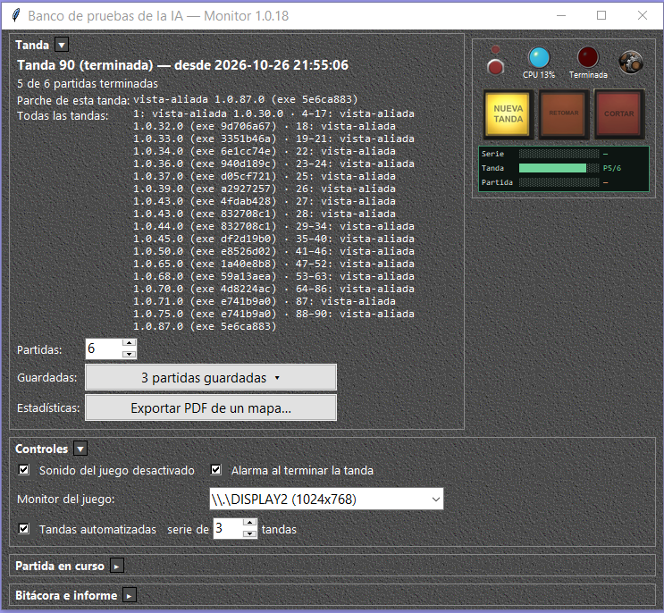
python ia\informe.py [tanda] — resultados por IA: puntos de victoria, ciudades, oro, partidas ganadas,
ataques desangrantes y, para las alianzas, refugios, defensas y qué equipo ganó.Alrededor del juego, el clan usa cinco programas propios. Todos se instalan con el Actualizador en
la carpeta HERRAMIENTAS del juego y, al actualizarse, conservan la configuración de cada PC.
| Programa | Opción | Para qué sirve |
|---|---|---|
| DarkValidator | 7 | Valida unidades contra el reglamento del clan. |
| Visor PGS | 8 | Muestra un bando completo («foto») con puntos, Factor y validación. |
| DarkCompare | 10 | Compara armas entre sí. |
| Votación | 11 (o 9, parches) | Votaciones durante la partida. |
| Sorteo | 12 (o 9, parches) | Sorteo del orden en que cada color elige su posición antes de la partida. |
.arm de la carpeta ARMY del juego) y dice si cumple el manifiesto del clan;
si no, indica qué regla incumple, con el número del manifiesto.ValidatorSetup.exe (opción 7 del Actualizador).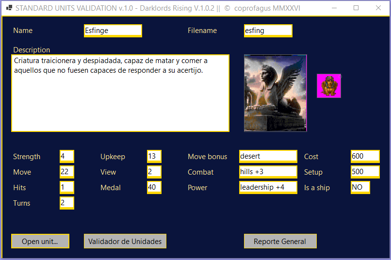
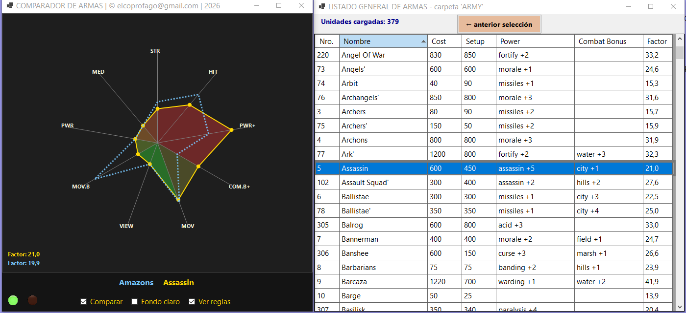
.PGS de la carpeta PGS). Solo lee: no modifica los archivos del juego.Default.rul; Factor por arma y total.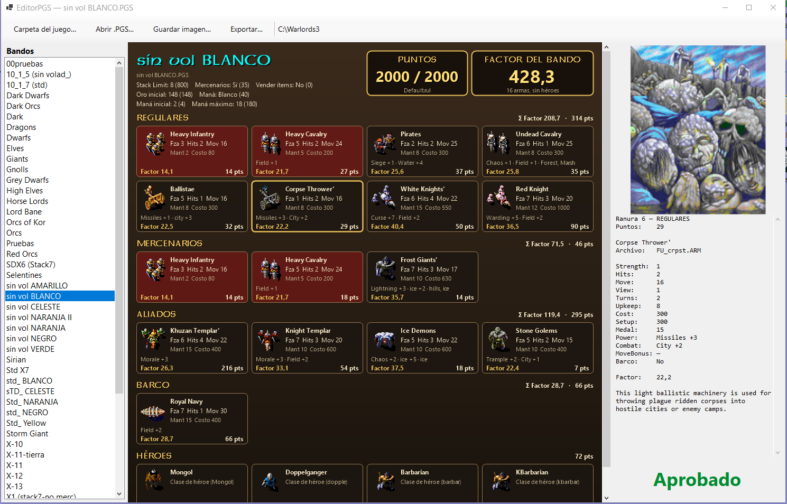
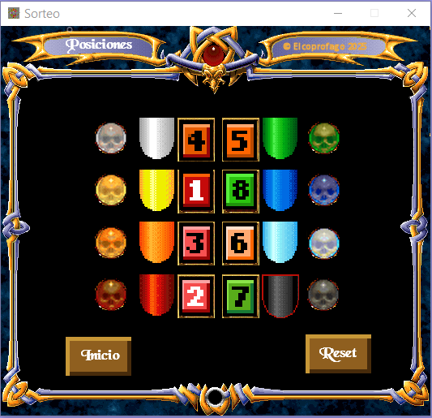
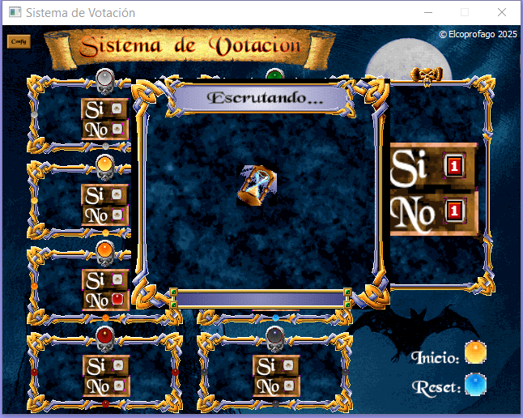
El Visor de historia abre una partida guardada (.SAV) y muestra su Events Report
—la «History of Events» del juego— con el mismo arte, ronda por ronda, con buscador y exportación a PDF. Solo lee:
no modifica la partida.
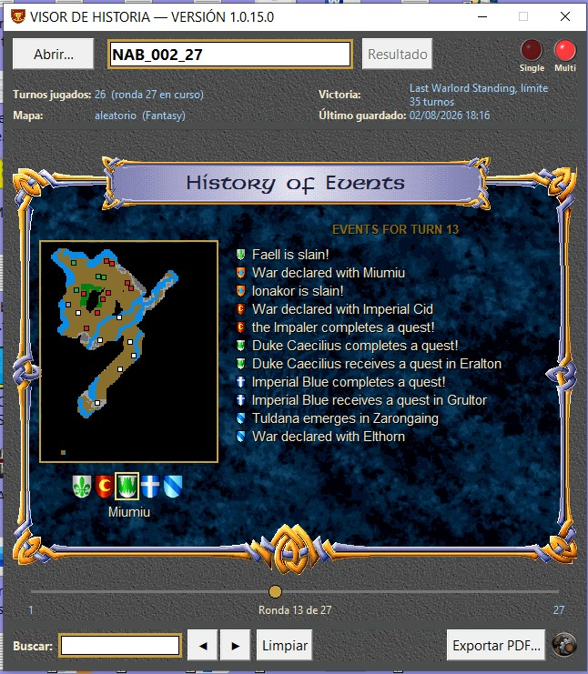
HISTORY del juego, donde el parche deja las partidas
terminadas; si no existe, en SAVES. Después recuerda la última carpeta usada..FIN en HISTORY). Una
partida en curso se abre únicamente si está marcada «a prueba» o «anulada» por una moción de votación (capítulo XI);
si no, el Visor avisa y no la abre. Desde la versión 1.0.22.0 del Visor (anulada, desde la 1.0.23.0).HISTORY jugadas con el parche 1.0.101.0 o posterior; en las demás queda gris.La ruedita de abajo a la derecha elige el fondo de la ventana (color liso o textura) y tiene el botón Actualizar versión, que baja la última publicada. La versión está siempre en el título de la ventana.
Una ciudad no es el único lugar donde resistir. Un grupo puede levantar torres, faros y murallas en el campo, y quien las defiende pelea con ventaja.
Se levantan con Build, en la casilla del líder del grupo: tierra sin camino, ciudad, ruina, sitio ni otra obra. Cada una cuesta la mitad de fundar una ciudad.
Torre y faro pasan al bando que entra en ellos, si no es aliado del dueño.
La parte alta del faro (cúpula y linterna) y la de la torre (almenas) asoman siempre sobre el bosque de la casilla de arriba; en su propia casilla los árboles tapan solo el pie.
Todos valen solo al defender, y se suman a lo que ya tiene cada unidad.
| Edificio | Quién lo recibe | Bonos |
|---|---|---|
| Torre de vigía | La pila en su casilla | +1 de fuerza a cada unidad que no es héroe · Life Ward +2 |
| Faro | La pila en su casilla | +1 de fuerza a cada unidad que no es héroe · Life Ward +1 |
| Muro de piedra | Los defensores sobre un bloque de muro propio en pie, o a 1 casilla de él | Missiles +3 · Acid +3 · Fortify +3 · Life Ward +3 |
| Ciudad | Los defensores de la ciudad | Life Ward igual a su tamaño (1 a 3) |
Fortify +3 suma 3 de fuerza a cada defensor, menos el Siege del atacante.
Cada punto de Life Ward anula un punto del Life Drain enemigo. No da golpes de más: solo protege los propios. Si varios edificios cubren al mismo grupo, vale el mayor, con un tope de 3. Por ahora solo lo dan los edificios; héroes, ítems y magias no.
github.com/elcoprofago/Simulador-Combate) tiene en TERRENO la
casilla del defensor: Nada, Camino, Ciudad, Faro, Torre o Muralla, con las defensas que corresponden a cada una.
Respeta los topes del juego: una pila lleva 8, o 6 si tiene algún volador; una ciudad defiende con sus 4 casillas, hasta
32 (las casillas con voladores llevan 6); en el agua, un barco «Landing» lleva 5 (6 si además es «Carrier») y un convoy
«Carrier» defiende con hasta 3 pilas. Si un lado se pasa de su tope, junto al botón Héroe titila una luz roja con la
leyenda «tope excedido» y la cuenta (por ejemplo, 9 / 8) hasta que se corrija. Embarcada, cada unidad
pelea con el menor entre su fuerza y la del barco (lo mismo con las vidas): un barco débil la rebaja, uno fuerte no la
mejora, y en tierra el barco no cuenta. Arriba a la derecha, un contador de PRUEBAS suma cada simulación y no se
borra al cerrar: se pone en cero a mano o solo, por día, semana, mes o año, desde Configuración. El botón «Historial» guarda
la ficha de los últimos 40 combates con ese mismo número (la lista muestra el ganador, ATACANTE o DEFENSOR en su color, con su porcentaje; los combates repetidos, con los mismos dos lados y el mismo campo, tienen sus filas del mismo color): el botón «Stats» muestra una torta con las formaciones que ganaron, en porcentaje, y cuál fue la mejor, contando todos los combates registrados desde el último reset del contador (no solo los 40 de la lista; poner el contador en cero, a mano o por período, borra esos registros, y el Simulador lo advierte antes); «Exportar ficha» y «Exportar gráfica» las guardan como imagen PNG o JPG. Al abrir una se ven los dos lados, el campo y el resultado: primero
quién ganó y con qué porcentaje, y en gris lo del que perdió. La batalla que se ve en la ventana de combate
es una de las que gana el ganador de la mayoría de las peleas. El porcentaje sale de todas las peleas pedidas, cada una
con un azar distinto (el juego tiene 65 536; con 65 536 peleas el número es el exacto). De noche promedia 20 noches,
porque el bono de los monster, demon y undead se sortea cada noche y puede cambiar mucho el resultado.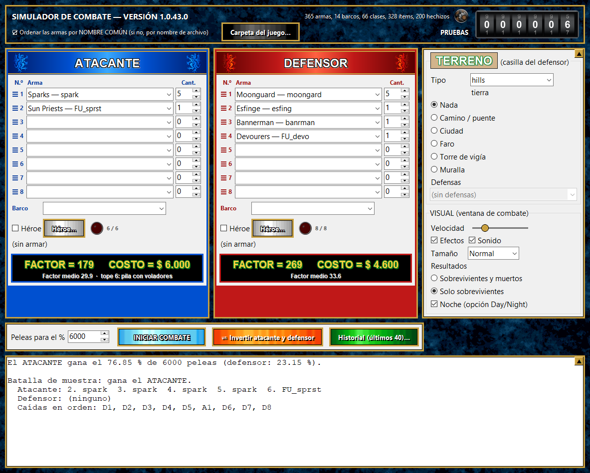
En red, el bando atacado también ve el combate en su PC. La ventana que aparece cuando cae una ciudad (ocupar, saquear o arrasar) se abre solo en la PC del atacante, que es quien decide.
| Quiero… | Cómo |
|---|---|
| Jugar con el parche | Abrir DarklordAV.exe (acceso directo del Escritorio) |
| Instalar o actualizar el parche | Actualizador: opción 6 (una vez por PC), después 9 |
| Compartir la vista con aliados | Customize Options → Allied View (con Diplomacy y Hidden Map) |
| Compartir ciudades | Customize Options → Shared Cities (con Diplomacy) |
| Pozos y remolinos en el mapa | Activar Hidden Ruins; para descubrirlos, Discover Ruins |
| Derribar un puente | Grupo al lado del puente → menú de órdenes → arrasar |
| Reconstruir un puente | Grupo al pie del puente derribado → Build |
| Sembrar una trampa | Grupo con bono Trap en la casilla → menú de órdenes → Build Trap |
| Ver un pozo o trampa | Mouse encima (lupa) y botón derecho |
| Ordenar a un aliado de la IA | Chat: #n ataca CIUDAD, #n ataca a BANDO, #n mandame refuerzos |
| Votar | Anfitrión: menú de partida → Voting → moción |
| Marcar la partida «a prueba» | Anfitrión: Voting → Test game; todos los humanos votan SÍ |
| Final anticipado, descalificar, vale todo, enganche, campeonato | Anfitrión: Voting → Early end (F; los detalles con «acuerdo:» en el chat), Disqualification (y el color), Anything goes (V), Re-entry Championship (C), Special tournament (T) o Void game (A); más SÍ que NO |
| Sortear bandos | Anfitrión: botón Sorteo junto a Chat, en la preparación |
| Comparar armas | Edit Side → botón DarkCompare |
| Jugar con día y noche | Customize Options → Day/Night |
| Levantar torre, faro o muro | Grupo en la casilla → Build |
| Camuflar tropas de noche | Editor: Move Bonus camouflg en todas las unidades del grupo |
| Pedir misión | Q (Get Quest) |
| Ver quién va primero (Winning, Armies, Cities, Gold) | F12 en el mapa (repetir para el siguiente); SHIFT + F12: nombres o escudos, barras o números |
Todos dentro de la carpeta del juego. Ninguno reemplaza un archivo del juego original.
| Archivo | Para qué |
|---|---|
DarklordAV.exe | El juego con el parche |
war3ed_av.exe | El editor con los bonos nuevos |
DATA\WAR3AV.RES | Diálogos, textos, sonidos y dibujos del parche |
DATA\BRIDNAME.TXT | Nombres de los puentes |
TERRAIN\SUBTYPE\landing.STT, carrier.STT, cabotage.STT, raft.STT, trap.STT, camouflg.STT | Los bonos nuevos, para el editor |
SETS\Fantasy\sorteo.pcx, darkcomp.pcx | Botones de Sorteo y Comparador |
PICTS\startav.pcx, startav1.pcx, startav2.pcx | Menú principal con el logotipo, en tres resoluciones |
RUINS\pozos.pcx | Dibujos de pozos, remolinos, trampas y tumbas |
Manual-Era-de-Alianzas.pdf | Este manual |
FX\Burst.wav | Explosión de una trampa |
RANDOM\Grass\ITEM.DAT, Item0-2.dat | Listas de ítems de los mapas al azar |
El paquete herramientas instala Herramientas\votacion.exe y Herramientas\sorteo.exe
(unos 100 MB).
Al 27/10/2026. probado = verificado en el juego; en prueba = funciona en las pruebas automáticas y falta confirmarlo jugando o con más partidas; en desarrollo = incompleto.
| Función | Estado |
|---|---|
| Vista aliada, niebla y ciudades compartidas | probado |
| Landing, Carrier, Cabotage | probado |
| Raft (balsas) | en prueba |
| Puentes: derribar, reconstruir, misión | probado |
| Habilidad Bridge +N | probado |
| Pozos, remolinos, trampas, lupa | probado |
| Trampas: daño del 40 al 80 % y parálisis | probado |
| Día y noche, minimapa de noche, con Hidden Map | probado |
| Camuflaje (camouflg) | probado |
| Monstruos, demonios y no muertos de noche | probado |
| Misión de escolta de la trampa | en prueba |
| Ítems personalizados en mapas al azar | en prueba |
| Army List con las 25 reglas | probado |
| Órdenes por chat a la IA | probado |
| Votación, Sorteo y pausa | en prueba en otras PC del clan |
| Mociones de votación (las seis, marcas P y V, Visor) | en prueba |
| IA: economía (reserva, freno de producción, pilas sueltas, repliegue) | en prueba en partidas del clan; confirmada en el banco |
| IA de alianzas | en prueba (series A/B) |
| Pozos y trampas en red (misma tabla en todas las PC) | en desarrollo |
| Torres, faros, murallas y sus bonos | en prueba |
| Ventana de victoria solo para el atacante | en prueba en red |
| Opción 9 exige la 6 (Actualizador 1.0.13.0) | en prueba |
Aliado mutuo. Bando que se declaró aliado de otro y recibió la misma declaración.
Anfitrión. La PC que crea la partida en red (máquina 0). Opera la Votación y el Sorteo.
Camuflaje. Grupo que de noche se confunde con el terreno: todas sus unidades tienen el bono camouflg.
Convoy. Hasta tres barcos con Carrier, en casillas vecinas, que se mueven y defienden como uno.
Ciudad compartida. Ciudad de un bando que sus aliados mutuos pueden usar como propia para entrar y defender.
IA de prueba. La IA con las mejoras en estudio, activada por color en DATA\IA.INI.
Mina submarina. Trampa construida en el agua.
Pila. Grupo de ejércitos en una casilla (stack).
Pozo. Peligro oculto en tierra que mata a los ejércitos no voladores.
Remolino. Peligro oculto en mar abierto que hunde barcos.
Tanda. Serie de partidas IA contra IA del banco de simulación.
Trampa. Peligro que siembra un jugador con una unidad de bono Trap; explota dos veces.
Halo. Zona iluminada alrededor de una ciudad, ruina, sitio, puente o ejército propio, de noche.
Vista aliada. Mapa explorado compartido entre aliados mutuos.
Lo que cambió en cada versión del parche, de la más nueva a la más vieja.
| 1.0.274.0 | 19/11/2026 | IA de prueba (solo en las tandas del banco, no en las partidas): el constructor de la computadora va al paso que eligió cerrar y levanta allí un bloque de muralla por turno, con la misma orden que usa el jugador. Las partidas normales no cambian. |
| 1.0.273.0 | 19/11/2026 | Los botones Sorteo (preparación) y Comparador (Edit Side) se comportan como los demás botones del juego: el aro naranja aparece al pasar el puntero y se va al sacarlo, y al apretarlos se ve entero, sin tramos cortados. |
| 1.0.272.0 | 19/11/2026 | Los botones Sorteo (preparación) y Comparador (Edit Side) ya no quedan con el borde naranja con solo pasarles el puntero por encima: el borde se ve únicamente mientras el botón está apretado, como en los demás botones del juego. |
| 1.0.271.0 | 19/11/2026 | Por dentro, para la IA: la computadora detecta los pasos clave del mapa (los que se cierran con 1 a 3 bloques de muralla y dejan ciudades de los dos lados) y, si tiene Artificer o Engineer, oro suficiente y una unidad que construye, elige cuál cerraría según la amenaza de sus enemigos. Todavía no construye: las partidas no cambian. El banco de pruebas registra la elección. |
| 1.0.270.0 | 19/11/2026 | Los botones Sorteo (preparación) y Comparador (Edit Side) ahora sí quedan sin el borde naranja después de pulsarlos: en la 1.0.269.0 el juego volvía a encenderlo justo después del arreglo. |
| 1.0.269.0 | 19/11/2026 | Los botones Sorteo (preparación) y Comparador (Edit Side) ya no quedan con el borde naranja después de pulsarlos. El del Comparador es un 20 % más chico. Una moción con marca aprobada por segunda vez quita la marca (la P desaparece con una segunda «Test game» aprobada). Al pulsar la torrecita de la barra del grupo se cierra la barra, como con los demás botones, y no queda a la vista detrás del menú ni de la ventana de reconstruir. |
| 1.0.268.0 | 19/11/2026 | Marcador en el mapa: la estrella del bando con hechizos en juego es ahora la de la botonera, la que se enciende junto al número de maná (MAINSCR.PCX, 5 × 7), en rosa con el centro claro. Reemplaza la de la 1.0.265.0, que había salido de la esfera de maná y se veía como una cruz. |
| 1.0.267.0 | 19/11/2026 | Montañas altas: ya no se cruzan ni volando. Los voladores las rodean, como las tropas a pie; un camino de montaña sigue sirviendo. Colinas y bosque profundo no cambian. La computadora también las rodea. |
| 1.0.266.0 | 19/11/2026 | Balsas (Raft): aguantan 2 vueltas en el agua. Si al empezar la tercera no desembarcaron, se hunden con todo lo que llevan, con el sonido del ítem que cae al agua. Con Raft tampoco rige Carrier (sin convoyes, como ya decía este Manual). La mina que cae al agua al derribarse su puente suena igual, para su dueño o quien la había descubierto. |
| 1.0.265.0 | 19/11/2026 | Marcador en el mapa: la estrella del bando con hechizos en juego es ahora la del propio juego, la rosa de cuatro puntas de la esfera de maná (PICTS.PCX), con sus píxeles originales (11 × 11, del alto del texto). |
| 1.0.264.0 | 19/11/2026 | Marcador en el mapa: la estrella violeta del bando con hechizos en juego tiene un dibujo nuevo, hecho por el usuario (picts\star.pcx), reducido a 7 × 7. |
| 1.0.263.0 | 19/11/2026 | Construcciones: el tope de la partida sube de 64 a 512 obras (torres, faros y bloques de muro, sumando todos los bandos). Las partidas guardadas con versiones anteriores se siguen cargando. |
| 1.0.262.0 | 19/11/2026 | Marcador en el mapa: estrella violeta más chica (7 × 7); título siempre centrado sobre los renglones y un poco más separado de ellos; el conjunto queda siempre cerca del margen derecho en cualquiera de las cuatro vistas. |
| 1.0.261.0 | 19/11/2026 | Marcador en el mapa: SHIFT + F12 pasa por cuatro vistas (nombres o escudos, con barras o con números); estrella violeta al principio del renglón del bando con hechizos en juego; título del informe en negrita más visible. |
| 1.0.260.0 | 19/11/2026 | Marcador en el mapa más prolijo: letra más chica con el título en negrita, barras del alto de las minúsculas, y el conjunto un poco más a la derecha y más arriba, sin tocar el marco. |
| 1.0.259.0 | 18/11/2026 | El marcador en el mapa pasa a F12 (con F3 seguía sin responder); SHIFT + F12: números. F3 vuelve a ser Chat Mode, y la Ayuda (F1) muestra las dos. |
| 1.0.258.0 | 18/11/2026 | El marcador de F3 no respondía (en ninguna partida): ahora sí. F3 ya no abre la Pausa en red, y la Ayuda (F1) dice «F3 - Scoreboard» en vez de «Chat Mode». |
| 1.0.257.0 | 18/11/2026 | Marcador en el mapa: F3 muestra sobre el mapa los cuatro bandos que van primeros en Winning, Armies, Cities o Gold, de mayor a menor, en su color y con barras (SHIFT + F3: números). Ver el capítulo III. |
| 1.0.256.0 | 18/11/2026 | Solo para el banco de simulación: un registro nuevo anota cada vez que un grupo de la computadora zarpa en balsa y desde dónde (una costa cualquiera, una ciudad o un punto de transbordo), para medir si la IA sabe que la balsa puede salir de cualquier costa. El juego no cambia. |
| 1.0.255.0 | 18/11/2026 | La regla de los asaltos a ciudades pasa a las partidas normales y del ranking: la computadora no asalta una ciudad si tiene menos de 20 % de probabilidad de ganar. Pierde un 10 % menos de ejércitos, sin jugar peor. |
| 1.0.254.0 | 18/11/2026 | Solo para la IA de prueba del banco: se apaga el ataque al bloque de muralla de la 1.0.252.0. En 64 partidas perdió los 16 ataques, con 65 ejércitos muertos y ningún bloque derribado. Las partidas normales y las del ranking no cambian. |
| 1.0.253.0 | 18/11/2026 | Dibujo de la balsa: la vela ya no se marca en la máscara de selección; al seleccionarla solo se ilumina el contorno, como en el barco de guerra. El juego no tiñe las unidades con el color del bando: el bando se ve en la banderita con el número. |
| 1.0.252.0 | 18/11/2026 | Solo para la IA de prueba del banco: cuando desiste de asaltar una ciudad por baja probabilidad de victoria y tiene al lado un bloque de muralla enemigo, ataca el bloque más dañado para abrir brecha, en vez de quedarse quieta. Las partidas normales y las del ranking no cambian. |
| 1.0.251.0 | 18/11/2026 | Dibujo de la balsa: contorno verde de selección alrededor de la balsa, no solo en la vela. |
| 1.0.250.0 | 18/11/2026 | Bono de movimiento nuevo Raft (balsas): el barco de un bando con Raft zarpa y desembarca en cualquier costa, lleva hasta 3 unidades y no se aleja más de 1 casilla de tierra. Movimiento y fuerza, los del .ARM. Dibujo de la balsa (ARMY\balsa.PCX) con su estela. |
| 1.0.249.0 | 18/11/2026 | Pedidos del clan: ya no se siembran trampas dentro de una ciudad, y se puede sembrar sobre el agujero de una trampa ajena que ya explotó al menos una vez (la nueva la reemplaza), como ya se podía sobre una gastada. |
| 1.0.248.0 | 18/11/2026 | Al derribar un puente, las trampas sembradas sobre él caen al agua y desaparecen. Antes quedaban como minas submarinas donde estaba el puente (pedido del clan). |
| 1.0.247.0 | 18/11/2026 | Solo para la IA de prueba del banco: el corte para no asaltar una ciudad baja del 30 % al 20 % de probabilidad de victoria. En 64 partidas, los asaltos de entre 20 % y 29 % se ganaron casi la mitad de las veces. Las partidas normales y las del ranking no cambian. |
| 1.0.246.0 | 17/11/2026 | Solo para la IA de prueba del banco: la regla de la 1.0.245.0 (no asaltar una ciudad con menos del 30 % de probabilidad de victoria) no llegaba a usarse, porque los asaltos a ciudades pasan por otro punto del código. Ahora sí se aplica. Las partidas normales y las del ranking no cambian. |
| 1.0.245.0 | 17/11/2026 | Solo para la IA de prueba del banco: antes de asaltar una ciudad, la computadora consulta su propio cálculo de probabilidad de victoria y desiste si es menor al 30 %. Las partidas normales y las del ranking no cambian. |
| 1.0.244.0 | 17/11/2026 | Solo para el banco de pruebas de la IA: registra cuándo la computadora ataca un bloque de muralla y cuándo tiene ejércitos junto a una muralla enemiga, para medir qué hace frente a ella. El juego no cambia. |
| 1.0.243.0 | 17/11/2026 | La mejora de los ataques perdidos (versión 1.0.242.0) pasa a las partidas normales y del ranking: la computadora no ataca en campo abierto con un grupo de menos de la mitad de la fuerza del enemigo. El banco la confirmó en 64 partidas (más puntos de victoria y 37 partidas ganadas contra 22). |
| 1.0.242.0 | 17/11/2026 | IA en prueba: la computadora no ataca en campo abierto con un grupo de menos de la mitad de la fuerza del enemigo (esos ataques se perdían casi siempre). En ciudades ataca como antes. Por ahora solo en los bandos que el banco de simulación pone en «IA de prueba»; en las partidas normales no cambia nada. |
| 1.0.241.0 | 17/11/2026 | Con PANTALLA.INI, también la ventana de inicio se abre en el monitor elegido, centrada. |
| 1.0.240.0 | 17/11/2026 | Elegir de antemano en qué monitor arranca el juego: archivo DATA\PANTALLA.INI con [Pantalla] y Monitor=2 (capítulo «Arrancar el juego»). Sin ese archivo, igual que antes. |
| 1.0.239.0 | 17/11/2026 | Solo para el banco de pruebas de la IA: las partidas juegan aunque nunca hayan tenido el foco (antes quedaban pausadas desde el arranque, sin jugar un turno). El juego no cambia. |
| 1.0.238.0 | 16/11/2026 | Solo para el banco de pruebas de la IA: la ventana de inicio de cada partida se abre directo en el monitor del banco y no tapa la pantalla principal. El juego no cambia. |
| 1.0.237.0 | 16/11/2026 | Solo para el banco de pruebas de la IA: el registro de hechizos lanzados anota bien qué efectos tiene cada hechizo. El juego no cambia. |
| 1.0.236.0 | 16/11/2026 | Faro y torre en el bosque: los árboles tapan solo el pie de la obra, con un borde irregular de copas, en vez de cortar el cuerpo con una línea recta. |
| 1.0.235.0 | 16/11/2026 | Sobre el bosque asoma solo la parte alta del faro o la torre (cúpula, linterna, almenas); la base queda entre los árboles, como antes. |
| Versión | Fecha | Qué cambió |
|---|---|---|
| 1.0.234.0 | 16/11/2026 | La cúpula del faro (y las torres y muros) ya no queda tapada por el borde del bosque de la casilla vecina: el juego pintaba ese borde después de las construcciones. |
| 1.0.233.0 | 16/11/2026 | Solo para el banco de pruebas de la IA: se registra qué hechizo lanza la computadora, para decidir si se adopta el arreglo de la elección de hechizos. El juego no cambia. |
| 1.0.232.0 | 15/11/2026 | Mociones nuevas Special tournament (T azul con borde dorado) y Void game (partida anulada, A gris con borde negro; el Visor de historia la abre aunque no haya terminado). Orden de las letras: P, F, V, C, T, A. Votación 1.1.9; el Visor de historia 1.0.23.0 muestra las letras junto al nombre de la partida. |
| 1.0.231.0 | 15/11/2026 | Marcas por letra en la esquina del mapa: F de Early end, que ya no cierra la partida sola (los detalles van con «acuerdo:» en el chat), y C de la moción nueva Championship (campeonato), además de la P y la V. Orden: P, F, V, C. Votación 1.1.8 muestra «Championship». |
| 1.0.230.0 | 15/11/2026 | La P de Test game y la V de Anything goes no se veían: el juego pintaba el marco del mapa encima. Ahora se dibujan después del marco, en la esquina superior izquierda del mapa visible. |
| 1.0.229.0 | 15/11/2026 | El submenú de mociones de votación usa el interlineado de los demás menús (los renglones salían encimados). Al aprobarse una moción con marca, o al cargar una partida marcada, el mapa se redibuja entero para que la P o la V aparezcan enseguida. |
| 1.0.228.0 | 15/11/2026 | La V de Anything goes va en la esquina superior izquierda del mapa, el lugar de toda marca, también sin la P: es otra moción, sin relación con Test game. Si hay dos marcas a la vez, la segunda sigue a la derecha. |
| 1.0.227.0 | 15/11/2026 | Las demás mociones de votación: Early end (la partida termina como un acuerdo), Disqualification (con el color elegido; el bando pasa a la computadora al terminar la ronda), Anything goes (no rige el Reglamento del Clan; V en el mapa) y Re-entry (el humano eliminado toma el bando de la computadora con menos puntos al terminar la ronda). Se aprueban con más SÍ que NO, contando los votos virtuales. Los textos del juego que estaban en castellano pasan al inglés (Voting, Pause, Lighthouse, Compare, Game over, avisos de pausa y resultado de la votación), porque el juego se va a distribuir; las órdenes por chat siguen en castellano. Requiere Votación 1.1.7 (paquete herramientas 1.0.0.5). |
| 1.0.226.0 | 15/11/2026 | Mociones de votación: la línea Votacion abre un submenú con mociones. «Partida a prueba», aprobada por todos los humanos, marca la partida (se guarda con ella), el mapa muestra una P verde con borde rojo arriba a la izquierda y el Visor de historia la abre aunque no haya terminado. Las demás mociones quedan en gris para próximas versiones. Requiere Votación 1.1.5 (paquete herramientas 1.0.0.4). |
| 1.0.225.0 | 15/11/2026 | Al pedir Pausa en una partida en red, todas las PC guardan la misma partida («_pausa»); antes solo la guardaba la PC que la pedía y al cargarla en red el juego decía que no todos los jugadores podían unirse. |
| 1.0.224.0 | 15/11/2026 | En los últimos 5 segundos del turno (partidas con límite de tiempo) suena la cuenta regresiva de los informes y el cursor muestra los números, también jugando en el mapa. |
| 1.0.223.0 | 15/11/2026 | Solo en las tandas de prueba (con el Monitor de IA): la computadora en prueba elige qué hechizo lanzar sin que las casillas de efecto vacías le sumen un valor al azar. En las partidas normales no cambia nada. |
| 1.0.222.0 | 15/11/2026 | La computadora repara sus muros de piedra dañados al empezar su turno, en todas las partidas (también las del ranking): un bloque con un grupo propio encima o al lado, si la reparación no cuesta más de la mitad de su oro. |
| 1.0.221.0 | 14/11/2026 | IA en prueba: la computadora espera la noche. De día, una pila con mayoría de monstruos, demonios o no muertos y un enemigo parejo al alcance no ataca y espera la vuelta de noche, cuando esas unidades ganan +2. Por ahora solo en los bandos que el banco de simulación pone en «IA de prueba». |
| 1.0.220.0 | 14/11/2026 | La computadora siembra trampas también en las partidas normales y en las del ranking del clan (sin DATA\IA.INI). En la tanda 167 sembró 11 trampas en 10 partidas; 2 de ellas mataron 9 ejércitos enemigos y ningún bando cayó en una propia. |
| 1.0.219.0 | 13/11/2026 | IA en prueba: la computadora siembra trampas. Una pila con una unidad con el bono «Trap», fuera de una ciudad, a 3 casillas o menos de una ciudad propia y con un enemigo a 12 o menos, siembra una trampa en su casilla si le sobra el oro (costo más dos turnos de mantenimiento). Una por bando y turno. Por ahora solo en los bandos que el banco de simulación pone en «IA de prueba». |
| 1.0.218.0 | 13/11/2026 | La IA nueva juega también en las partidas normales y en las del ranking del clan (sin DATA\IA.INI): reserva de oro, freno de producción, pilas sueltas y repliegue por quiebra. En la tanda 165 no tuvo ninguna deserción (la original, 48) y quedó mejor ubicada. Las reglas de alianzas siguen solo en el banco de simulación. |
| 1.0.217.0 | 13/11/2026 | IA en prueba: deja de fabricar ejércitos antes de quedarse sin oro. Antes miraba lo que pagaba en ese momento, con casi todo el ejército dentro de las ciudades (donde paga un tercio); al salir las pilas el gasto se triplicaba y los ejércitos desertaban. Ahora cuenta lo que pagaría con todo el ejército afuera, con un margen del oro guardado. |
| 1.0.216.0 | 13/11/2026 | IA en prueba: solo agrega un registro para las pruebas (pilas que vuelven a su ciudad y terminan el turno afuera); el juego no cambia. |
| 1.0.215.0 | 13/11/2026 | IA en prueba: corrige el cambio de la 1.0.214.0, que no llegaba a actuar; ahora la pila que volvía a su ciudad sin oro sigue volviendo de verdad. |
| 1.0.214.0 | 12/11/2026 | IA en prueba: con el oro acabándose, una pila que ya volvía a su ciudad, o un grupo recién armado con ejércitos sueltos, sigue hacia la ciudad propia más cercana aunque el planificador le proponga atacar; antes iba y venía sin llegar. |
| 1.0.213.0 | 13/11/2026 | El enlace del clan tiene ayuda emergente: «Click copies the link: paste it in your browser (Ctrl+V)». |
| 1.0.212.0 | 13/11/2026 | Tras el clic en el enlace del clan, el texto avisa «Enlace copiado: pegalo en el navegador (Ctrl+V)». |
| 1.0.211.0 | 13/11/2026 | Un clic en el enlace del clan copia la dirección (para pegarla en el navegador). La luz fija de la base del faro es más tenue. |
| 1.0.210.0 | 12/11/2026 | El haz del faro llega a 8 casillas, en degradé; la luz fija del faro baja a la de las demás construcciones. El enlace del clan del menú principal queda un poco más abajo y vuelve a intentar abrirse con el clic. |
| 1.0.209.0 | 12/11/2026 | El haz del faro se ve claro en tierra y agua (casi tan iluminado como junto al faro) y gira un poco más lento. El enlace del clan del menú principal se puede tocar y abre el sitio. |
| 1.0.208.0 | 12/11/2026 | IA en prueba: cuando el mantenimiento supera al ingreso y el oro se está acabando, las pilas que iban a ruinas, ciudades neutrales, ítems o misiones vuelven a su ciudad propia más cercana, donde pagan menos mantenimiento. |
| 1.0.207.0 | 12/11/2026 | De noche, el faro proyecta un haz de luz giratorio de 30 grados y 6 casillas, en el sentido de las agujas del reloj, que ilumina tierra y agua. |
| 1.0.206.0 | 12/11/2026 | El botón de la torre (construir) se llama «Build /Rebuild - Repair». |
| 1.0.205.0 | 12/11/2026 | Torre de vigía: ve a 4 casillas. Enlace a la web del clan en el menú principal. SHIFT + 1-9 guarda los nueve grupos con cualquier teclado. |
| 1.0.204.0 | 12/11/2026 | Ajuste de los bonos del muro (en prueba). |
| 1.0.203.0 | 11/11/2026 | IA en prueba: ahorra el oro para reconstruir un puente que le abre camino (ahorro con destino). |
| 1.0.202.0 | 11/11/2026 | Manual: Apéndice E con este historial de versiones. |
| 1.0.201.0 | 11/11/2026 | Manual: capítulo XVII «Obras y defensas». |
| 1.0.200.0 | 11/11/2026 | El +1 de fuerza de torre y faro ahora se aplica en el combate (antes solo se mostraba). |
| 1.0.199.0 | 11/11/2026 | La ventana de victoria (ocupar, saquear, arrasar) se abre solo en la PC del atacante. |
| 1.0.198.0 | 11/11/2026 | Life Ward de los edificios: ciudad 1 a 3, torre +2, faro +1, muro +3. |
| 1.0.193.0 a 1.0.197.0 | 11/11/2026 | Bonos del muro para sus defensores (en prueba). |
| 1.0.190.0 a 1.0.192.0 | 11/11/2026 | Colores de la muralla (gris azulado) y humo del muro dañado. |
Las versiones anteriores a la 1.0.190.0 no están en esta tabla; su detalle queda en el historial del repositorio.